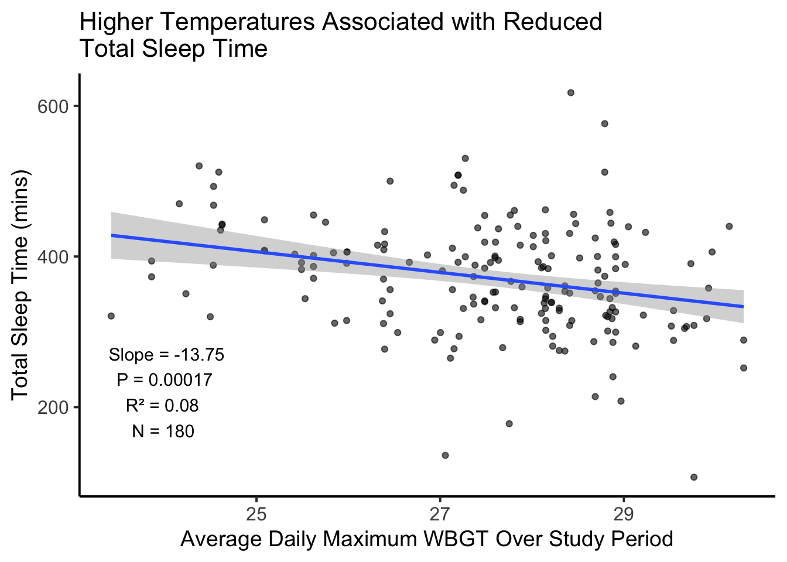
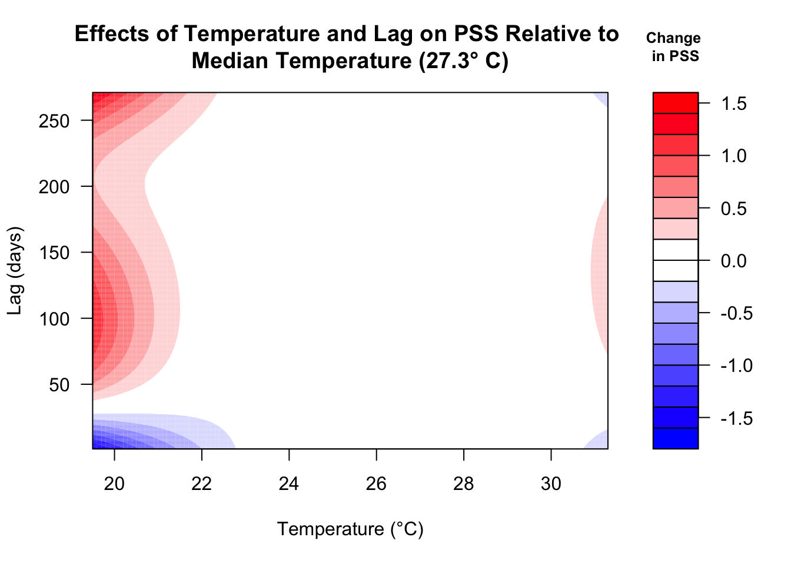
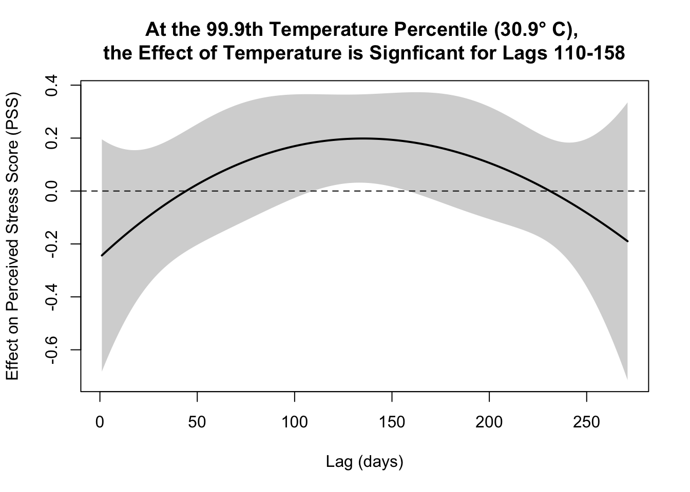
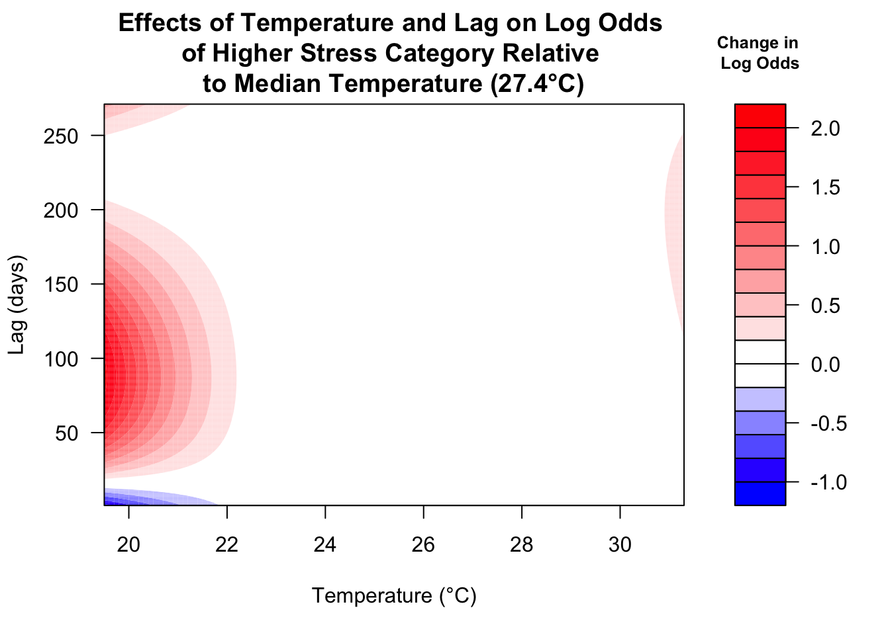
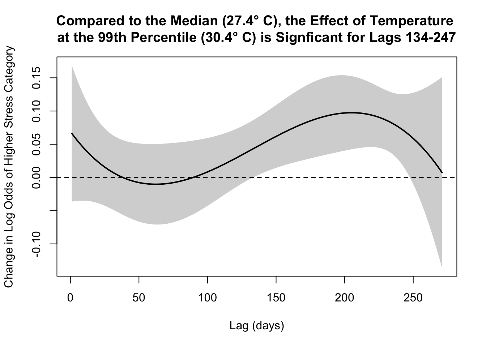

Preliminary Analysis of Heat’s Impact on Mental Health Among Pregnancy Cohort
This analysis was included in a grant proposal that aims to further explore the impacts of temperature on mental health and test whether an intervention related to heat warning education could improve health outcomes.
Pregnancy and the postpartum period can be an especially challenging time for women’s mental health—no matter where they live or what their circumstances are. In the U.S., around 13% of women experience perinatal depression [1]. However, in many lower-income settings, these numbers are much higher. In Ghana, for instance, perinatal depression has been reported in up to 50% of pregnancies, with 13–17% of women experiencing suicidal thoughts [2].
Rural areas, where healthcare services are often harder to access, seem to face the highest risks. Compounding the issue, Ghana (like much of sub-Saharan Africa) doesn’t have a routine screening protocol for perinatal depression and anxiety, leaving many cases undetected and untreated [3].
Meanwhile, research in climate and health has increasingly shown that extreme temperatures can impact mental health [4]. Evidence suggests that heat exposure may trigger inflammation in the hypothalamic-pituitary-adrenal (HPA) axis—which plays a key role in managing the body’s response to stress—and that activation contributes to anxiety [5].
Objectives
The analysis described below was originally prepared for a grant proposal aiming to build on existing research that links heat exposure to mental health challenges. If this grant is funded, the project will investigate the causal impact of high temperatures on maternal mental health in Ghana, explore the underlying mechanisms (e.g. physiological or social), and pilot a heat warning system to assess whether targeted interventions can mitigate these risks.
As a starting point, I used data from an ongoing pregnancy cohort in rural Ghana to highlight existing associations between heat and mental health in our target population. My preliminary analysis emphasizes the need for further research in this area and sets the stage for a larger-scale project should the proposal move forward.
Data Used In Analysis
Pregnancy Cohort Data
For this analysis, I used data from the Ghana Randomized Air Pollution and Health Study (GRAPHS)—a pregnancy cohort from rural, agrarian communities that began recruitment in 2014 and includes years of follow-up data collection. Among its many measures, GRAPHS includes mental health assessments, as well as possible biological and social mechanisms contributing to mental health, such as sleep, comorbid diseases, and various health and demographic data.
Of these measures, 3 stood out to my team as particularly well-suited for the grant proposal:
Perceived Stress Scale (PSS) A holistic, self-reported measure of how much control individuals feel they have over their lives. In the GRAPHS cohort, this survey consists of four questions about the frequency of certain feelings or situations, and a total score is calculated based on the responses.
Sum Negative Domain Score (NDS) A measure centered on specific, stress-inducing life events (e.g., financial troubles, medical issues, etc.). Respondents self-reported which events they experienced and rated them as positive, negative, or neutral. Negative events were then summed across domains—financial, medical, and so on—to create the NDS. This approach allowed us to categorize pregnant women into three groups: low stress (NDS = 0–1), moderate stress (NDS = 3–5), and high stress (NDS > 5).
Actigraphy for Sleep Objective sleep measurements were collected from participants wearing watch-like devices (actigraphs) to estimate rest/activity cycles. Data were gathered from 156 participants during both single-night and multi-night recordings at two follow-up periods (4 and 8 years postpartum).
We decided to focus on all three measures to gain a well-rounded perspective on maternal stress—looking at how women feel in general, what real-life stressors they face, and how well they’re sleeping. By combining these different angles, we can be more confident in our overall findings.
Temperature Data
I initially looked at four different heat metrics—Sea Surface Temperature, Heat Index, Wet Bulb Temperature, and Wet Bulb Globe Temperature (WBGT). I ultimately chose WBGT because it’s well-known for capturing not just temperature, but also humidity, wind speed, and solar radiation. Military agencies, OSHA, and other groups rely on WBGT for guidelines on safe activity levels.
Since the grant zeroes in on high-heat events, I used daily maximum WBGT (derived from hourly readings) as the key measurement for this analysis.
Methods of Analysis
For this preliminary analysis, I used a few different modeling approaches—distributed lag models (DLMs) and two types of regression—to explore how temperature exposure over time may impact mental health outcomes.
Distributed Lag Models (DLMs): DLMs provide a flexible way to assess how temperature exposure at different points in time might influence stress levels. Instead of focusing on a single time window (e.g., just the day before the survey), DLMs capture both delayed and cumulative effects over the full 270-day pregnancy period. I started with this approach to get a clearer picture of how far back high temperatures might impact later mental health outcomes.
The sections below focus on the regression results, but for those interested, I’ve included the full DLM results and interpretations in the appendix.
Linear Regression: Linear regression examines the relationship between a continuous predictor (like average WBGT) and a continuous outcome (such as the PSS-4 score). Based on initial results from the DLM, I looked at whether higher average WBGT in each trimester—or over the entire pregnancy—was linked to changes in stress levels or total sleep duration.
Ordered Logistic Regression: Since the sample was divided into ordered stress categories (low, moderate, and high) based on the NDS score, ordered logistic regression helps estimate the odds of being in a higher stress category given temperature exposure.
Exploring the relationship between temperature and perceived stress (PSS)
Linear Regression
To investigate the relationship between heat exposure (WBGT) and perceived stress scores (PSS-4) during pregnancy, I calculated trimester-specific daily maximum WBGT averages as well as the overall average of daily maximum WBGT for the entire pregnancy. For the third trimester and full pregnancy period, I restricted the WBGT averages to temperatures recorded up to the survey date to ensure alignment with the stress assessment period.
As described earlier, I used a linear regression model to assess the association between PSS-4 and WBGT for each time period. Initially, I included covariates such as demographic, socioeconomic, and physical health data, but these variables did not significantly contribute to the model or improve its overall quality. For simplicity, I excluded them from the final results presented in the grant proposal and this blog.
Code
## SET UP THE DATA -- find temps over custom periods of interest# Function to process temperature data for the selected metricprocess_temperature_data <-function(era5_data, metric) { era5_data %>%select(community, date, !!sym(metric)) %>%rename(temp_metric =!!sym(metric)) %>%distinct()}# Process temp datatemp_data_clean <-process_temperature_data(era5_data = era5, metric ="max_wbgt")calc_custom_temp_avg <-function(stress_data, temp_data) { stress_data %>%rowwise() %>%# Perform operations for each row (unique survey observation)mutate(# Temperature on the day of the surveyavg_temp_day_of_survey = temp_data %>%filter(community == vname, date == survey_date) %>%summarise(mean_temp =mean(temp_metric, na.rm =TRUE)) %>%pull(mean_temp),# Temperature the day before the surveyavg_temp_day_before_survey = temp_data %>%filter(community == vname, date == survey_date -1) %>%summarise(mean_temp =mean(temp_metric, na.rm =TRUE)) %>%pull(mean_temp),# Average temperature for the week before the surveyavg_temp_week_before_survey = temp_data %>%filter(community == vname, date >= survey_date -7& date < survey_date) %>%summarise(mean_temp =mean(temp_metric, na.rm =TRUE)) %>%pull(mean_temp),# Average temperature for the 3 months before the surveyavg_temp_3_months_before = temp_data %>%filter(community == vname, date >= survey_date -90& date < survey_date) %>%summarise(mean_temp =mean(temp_metric, na.rm =TRUE)) %>%pull(mean_temp),# Average temperature for the 6 months before the surveyavg_temp_6_months_before = temp_data %>%filter(community == vname, date >= survey_date -180& date < survey_date) %>%summarise(mean_temp =mean(temp_metric, na.rm =TRUE)) %>%pull(mean_temp),## TRIMESTER TEMP CALCULATIONS# Estimate conception date (280 days before delivery)# Use gestational age if available, otherwise default to 280 - medical average (not our average) gestation period gestage_days =ifelse(is.na(gestage_days), 280, gestage_days),# Calculate conception date based on gestational ageconception_date = datdeliv - gestage_days,# Pre-conception temperature average (60 days before conception)avg_temp_pre_conception = temp_data %>%filter( community == vname, date >= conception_date -60& date < conception_date ) %>%summarise(mean_temp =mean(temp_metric, na.rm =TRUE)) %>%pull(mean_temp),# First trimester temperature averageavg_temp_first_trimester = temp_data %>%filter( community == vname, date >= conception_date & date < conception_date +90 ) %>%summarise(mean_temp =mean(temp_metric, na.rm =TRUE)) %>%pull(mean_temp),# Second trimester temperature averageavg_temp_second_trimester = temp_data %>%filter( community == vname, date >= conception_date +91& date < conception_date +180 ) %>%summarise(mean_temp =mean(temp_metric, na.rm =TRUE)) %>%pull(mean_temp),# Third trimester temperature averageavg_temp_third_trimester = temp_data %>%filter( community == vname, date >= conception_date +181& date <= survey_date # only include up until the survey date ) %>%summarise(mean_temp =mean(temp_metric, na.rm =TRUE)) %>%pull(mean_temp),# Average temperature across the entire pregnancyavg_temp_entire_pregnancy = temp_data %>%filter( community == vname, date >= conception_date & date <= survey_date # Filter pregnancy period estimated as 280 days before delivery. Only include up until the survey date. ) %>%summarise(mean_temp =mean(temp_metric, na.rm =TRUE)) %>%pull(mean_temp) ) %>%ungroup() # Remove row-wise grouping}# Add custom periodspss_simple_custom_lags <-calc_custom_temp_avg(stress_data = pss_simple, temp_data = temp_data_clean)# Rename variables in the datasetpss_simple_custom_lags_renamed <- pss_simple_custom_lags %>%rename(`Average Temp Entire Pregnancy`= avg_temp_entire_pregnancy,`Average Temp Pre-Conception`= avg_temp_pre_conception,`Average Temp First Trimester`= avg_temp_first_trimester,`Average Temp Second Trimester`= avg_temp_second_trimester,`Average Temp Third Trimester`= avg_temp_third_trimester ) %>%rename(`Number of Lifetime Pregnancies`= pregchn)# Define models for PSS4WBGT_daily_max_models_pss_renamed <-list(lm(PSS4 ~`Average Temp Entire Pregnancy`, data = pss_simple_custom_lags_renamed),lm(PSS4 ~`Average Temp Pre-Conception`, data = pss_simple_custom_lags_renamed),lm(PSS4 ~`Average Temp First Trimester`, data = pss_simple_custom_lags_renamed),lm(PSS4 ~`Average Temp Second Trimester`, data = pss_simple_custom_lags_renamed),lm(PSS4 ~`Average Temp Third Trimester`, data = pss_simple_custom_lags_renamed))# Display model summaries for PSS4stargazer(WBGT_daily_max_models_pss_renamed, type ="text", title ="Regression Results: PSS vs. WBGT Temperatures",column.labels =c("Entire Pregnancy", "Pre-Conception", "First Trimester", "Second Trimester", "Third Trimester"),dep.var.labels ="Perceived Stress Score", omit.stat =c("f", "ser"), no.space =TRUE, digits =2,star.cutoffs =c(0.05, 0.01, 0.001)) # Custom significance levels)
Elevated heat exposure during the entire pregnancy is significantly associated with elevated perceived stress levels. For every 1°C increase in the average daily maximum WBGT, our model predicts that the perceived stress score would increase on average by 0.87 (p < 0.01).
Higher average daily maximum WBGT during the first trimester (β = 0.47, p < 0.01) and second trimester (β = 0.59, p < 0.001) are both significantly associated with increased PSS-4 scores.
The third trimester average showed no significant effect, suggesting that elevated temperatures closer to the survey date are less strongly linked to stress levels.
Higher WBGT during the preconception period is associated with a slight, insignificant reduction in PSS-4 scores.
Exploring the relationship between temperature and sum NDS category
Ordered Logistic Regression
To further explore the link between heat stress and mental health during pregnancy, I calculated trimester-specific averages of daily maximum WBGT as well as the overall average of daily maximum WBGT for the full pregnancy period. As mentioned earlier, I used ordered logistic regression to assess the association between Sum NDS Category and WBGT averages, since Sum NDS is a categorical variable with a natural order (low, moderate, and high stress).
Code
calc_custom_temp_avg <-function(stress_data, temp_data, metric) { stress_data %>%rowwise() %>%mutate(# Temperature on the day of the surveyavg_temp_day_of_survey = temp_data %>%filter(community == vname, date == survey_date) %>%summarise(mean_temp =mean(!!sym(metric), na.rm =TRUE)) %>%pull(mean_temp),# Temperature the day before the surveyavg_temp_day_before_survey = temp_data %>%filter(community == vname, date == survey_date -1) %>%summarise(mean_temp =mean(!!sym(metric), na.rm =TRUE)) %>%pull(mean_temp),# Average temperature for the week before the surveyavg_temp_week_before_survey = temp_data %>%filter(community == vname, date >= survey_date -7& date < survey_date) %>%summarise(mean_temp =mean(!!sym(metric), na.rm =TRUE)) %>%pull(mean_temp),# Average temperature for the month before the surveyavg_temp_month_before_survey = temp_data %>%filter(community == vname, date >= survey_date -30& date < survey_date) %>%summarise(mean_temp =mean(!!sym(metric), na.rm =TRUE)) %>%pull(mean_temp),# Average temperature for the 3 months before the surveyavg_temp_3_months_before = temp_data %>%filter(community == vname, date >= survey_date -90& date < survey_date) %>%summarise(mean_temp =mean(!!sym(metric), na.rm =TRUE)) %>%pull(mean_temp),# Average temperature for the 6 months before the surveyavg_temp_6_months_before = temp_data %>%filter(community == vname, date >= survey_date -180& date < survey_date) %>%summarise(mean_temp =mean(!!sym(metric), na.rm =TRUE)) %>%pull(mean_temp),## TRIMESTER TEMP CALCULATIONS# Estimate conception date (280 days before delivery)# Use gestational age if available, otherwise default to 280 - medical average (not our average) gestation period gestage_days =ifelse(is.na(gestage_days), 280, gestage_days),# Calculate conception date based on gestational ageconception_date = datdeliv - gestage_days,# Pre-conception temperature average (60 days before conception)avg_temp_pre_conception = temp_data %>%filter( community == vname, date >= conception_date -60& date < conception_date ) %>%summarise(mean_temp =mean(!!sym(metric), na.rm =TRUE)) %>%pull(mean_temp),# First trimester temperature averageavg_temp_first_trimester = temp_data %>%filter( community == vname, date >= conception_date & date < conception_date +90 ) %>%summarise(mean_temp =mean(!!sym(metric), na.rm =TRUE)) %>%pull(mean_temp),# Second trimester temperature averageavg_temp_second_trimester = temp_data %>%filter( community == vname, date >= conception_date +91& date < conception_date +180 ) %>%summarise(mean_temp =mean(!!sym(metric), na.rm =TRUE)) %>%pull(mean_temp),# Third trimester temperature averageavg_temp_third_trimester = temp_data %>%filter( community == vname, date >= conception_date +181& date <= survey_date ) %>%summarise(mean_temp =mean(!!sym(metric), na.rm =TRUE)) %>%pull(mean_temp),# Average temperature across the entire pregnancyavg_temp_entire_pregnancy = temp_data %>%filter( community == vname, date >= conception_date & date <= survey_date ) %>%summarise(mean_temp =mean(!!sym(metric), na.rm =TRUE)) %>%pull(mean_temp) ) %>%ungroup()}metrics <-"max_wbgt"# Initialize an empty list to store resultsregression_results_polr <-list()# Loop through each metricfor (metric in metrics) {# Calculate custom temperature averages stress_data_with_temp <-calc_custom_temp_avg(crisis_simple, era5, metric)# Fit ordered logistic regressions for the metric models <-list(polr(formula = sum_nds_category ~ avg_temp_day_of_survey, data = stress_data_with_temp, method ="logistic"),polr(formula = sum_nds_category ~ avg_temp_day_before_survey, data = stress_data_with_temp, method ="logistic"),polr(formula = sum_nds_category ~ avg_temp_week_before_survey, data = stress_data_with_temp, method ="logistic"),polr(formula = sum_nds_category ~ avg_temp_month_before_survey, data = stress_data_with_temp, method ="logistic"),polr(formula = sum_nds_category ~ avg_temp_3_months_before, data = stress_data_with_temp, method ="logistic"),polr(formula = sum_nds_category ~ avg_temp_6_months_before, data = stress_data_with_temp, method ="logistic") )# Save results for the current metric regression_results_polr[[metric]] <- models}# List to store regression results and p-valuesregression_results <-list()# Loop through each metricfor (metric in metrics) {# Calculate custom temperature averages stress_data_with_temp <-calc_custom_temp_avg(crisis_simple, era5, metric)# Fit models (6 regressions for survey date, 5 for pregnancy period) models <-list(# polr(formula = sum_nds_category ~ avg_temp_day_of_survey, data = stress_data_with_temp, method = "logistic"),# polr(formula = sum_nds_category ~ avg_temp_day_before_survey, data = stress_data_with_temp, method = "logistic"),# polr(formula = sum_nds_category ~ avg_temp_week_before_survey, data = stress_data_with_temp, method = "logistic"),# polr(formula = sum_nds_category ~ avg_temp_month_before_survey, data = stress_data_with_temp, method = "logistic"),# polr(formula = sum_nds_category ~ avg_temp_3_months_before, data = stress_data_with_temp, method = "logistic"),# polr(formula = sum_nds_category ~ avg_temp_6_months_before, data = stress_data_with_temp, method = "logistic"),polr(formula = sum_nds_category ~ avg_temp_pre_conception, data = stress_data_with_temp, method ="logistic"),polr(formula = sum_nds_category ~ avg_temp_first_trimester, data = stress_data_with_temp, method ="logistic"),polr(formula = sum_nds_category ~ avg_temp_second_trimester, data = stress_data_with_temp, method ="logistic"),polr(formula = sum_nds_category ~ avg_temp_third_trimester, data = stress_data_with_temp, method ="logistic"),polr(formula = sum_nds_category ~ avg_temp_entire_pregnancy, data = stress_data_with_temp, method ="logistic") )# Extract coefficients and p-values for each model model_results <-lapply(models, function(model) { ctable <-coef(summary(model)) # Extract coefficients and standard errors p_values <-pnorm(abs(ctable[, "t value"]), lower.tail =FALSE) *2# Calculate p-values result <-data.frame(Coefficient = ctable[, "Value"], `Std. Error`= ctable[, "Std. Error"], `t Value`= ctable[, "t value"], `p Value`= p_values)return(result) })# Store results for the current metric regression_results[[metric]] <- model_results}# Combine results into a single data frame for easier reportingformatted_results <-lapply(names(regression_results), function(metric) { data <- regression_results[[metric]] model_names <-c(#"Day of Survey", # "Day Before Survey", # "Week Before Survey", # "Month Before Survey", # "3 Months Before", # "6 Months Before", "Pre-Conception", "First Trimester", "Second Trimester", "Third Trimester", "Entire Pregnancy") data <-lapply(seq_along(data), function(i) cbind(Model = model_names[i], data[[i]])) data <-do.call(rbind, data)cbind(Metric = metric, data)})# Combine all metrics into a single data framefinal_results <-do.call(rbind, formatted_results)# Convert row names to a columnfinal_results <- tibble::rownames_to_column(final_results, var ="regression_part")options(scipen=999)# Filter out rows with "low|moderate" or "moderate|high1"filtered_results <- final_results %>%filter(!grepl("low\\|moderate", regression_part)) %>%filter(!grepl("moderate\\|high", regression_part)) %>%filter(str_detect(regression_part, "avg_temp")) %>%# add exponentiated coefficient for intepretation of 1 degree increase in tempmutate(odds_ratio =exp(Coefficient)) %>%# add significant indicatormutate(significant =ifelse(p.Value <0.05, 1, 0)) filtered_results %>%select(Model, Coefficient, Std..Error, odds_ratio, p.Value) %>%rename(`Model`= Model,`Coefficient`= Coefficient,`Std. Error`= Std..Error,`Odds Ratio`= odds_ratio,`P-Value`= p.Value ) %>%gt() %>%fmt_number(columns =c(`Coefficient`, `Std. Error`, `Odds Ratio`, `P-Value`),decimals =3 ) %>%tab_header(title ="Ordered Logistic Regression Results",subtitle ="Higher WBGT during pre-conception, the first trimester, and the entire pregnancy period as a whole associated with increased likelihood of belonging to a higher stress group." ) %>%cols_align(align ="center" )
Ordered Logistic Regression Results
Higher WBGT during pre-conception, the first trimester, and the entire pregnancy period as a whole associated with increased likelihood of belonging to a higher stress group.
Model
Coefficient
Std. Error
Odds Ratio
P-Value
Pre-Conception
0.176
0.085
1.193
0.038
First Trimester
0.301
0.096
1.351
0.002
Second Trimester
0.165
0.092
1.179
0.072
Third Trimester
−0.003
0.086
0.997
0.976
Entire Pregnancy
0.443
0.153
1.557
0.004
The results indicate that:
Again, heat stress during the entire pregnancy is significantly associated with belonging to a higher stress group. A °1C increase in WBGT is associated with a 55.7% increase in the odds of belonging to a higher stress group (p = 0.004).
Higher daily maximum WBGT during the preconception period and first trimester is significantly associated with an increased likelihood of belonging to a higher stress group. A 1°C increase in WBGT is linked to a 19.3% increase in the odds of higher stress during pre-conception (p = 0.038) and a 35.1% increase during the first trimester (p = 0.002).
The second trimester showed a positive association between WBGT and Sum NDS Category, but the effect was not statistically significant.
The third trimester showed no association between WBGT and Sum NDS Category, suggesting that temperatures closer to the survey date are less strongly linked to stress levels.
Exploring the relationship between temperature and sleep quantity
A linear regression model was employed to examine the association between average WBGT and total sleep time (TST), providing insights into the impact of heat on sleep quantity.
Code
actigraphy_with_temp <- actigraphy_simple_full %>%rowwise() %>%# Process each row individuallymutate(avg_temp = WBGT_daily_max %>%filter( community == vname, # Match the community date >= Start.Date & date <= End.Date # Filter by date range ) %>%summarise(mean_temp =mean(max_wbgt, na.rm =TRUE)) %>%# Calculate mean temperature between the start date and end date (for just one night study, this would be a two day average)pull(mean_temp) # Extract the mean value ) %>%ungroup() %>%# Remove row-wise grouping filter(!is.na(avg_temp)) # remove NA community or participants where no temp data for community# After removing 7 participants who did not have a community that matches the communities in the temperature data, we are left with 177 participants. actigraphy_with_temp_no_outlier <- actigraphy_with_temp %>%filter(avg_temp >20) # One temperature recording (18.7) is over 4 degrees colder than the next coolest temperature (22.9) -- this point was found to be extremely high leverage as well as an outlier. There is not evidence that this is an erroneous reading, but for the purposes of creating a reliable model, the value was removed. # Fit a linear modelsleep_time_model_no_outlier <-lm(Sleep.Time..mins. ~ avg_temp, data = actigraphy_with_temp_no_outlier)# Extract model summary statisticssummary_sleep_time <-summary(sleep_time_model_no_outlier)slope <-round(coef(summary_sleep_time)["avg_temp", "Estimate"], 2)p_value <-signif(coef(summary_sleep_time)["avg_temp", "Pr(>|t|)"], 2)r_squared <-round(summary_sleep_time$r.squared, 2)n <-nrow(actigraphy_with_temp_no_outlier)# Create the plotactigraphy_with_temp_no_outlier %>%ggplot(aes(x = avg_temp, y = Sleep.Time..mins.)) +geom_point(alpha =0.6) +geom_smooth(method ="lm") +theme_classic(base_size =15) +# Increase base text sizelabs(x ="Average Daily Maximum WBGT Over Study Period",y ="Total Sleep Time (mins)",title ="Higher Temperatures Associated with Reduced \nTotal Sleep Time"# ) +theme(plot.title =element_text(size =16), # Adjust title size and styleaxis.title.x =element_text(size =14), # Adjust x-axis label sizeaxis.title.y =element_text(size =14), # Adjust y-axis label sizeaxis.text =element_text(size =12) # Adjust axis text size ) +annotate("text",x =min(actigraphy_with_temp_no_outlier$avg_temp) +0.5, y =220, label =paste("Slope =", slope, "\nP =", p_value,"\nR² =", r_squared, "\nN =", n ),hjust =0.4, vjust =0.5, size =4 )

A highly significant negative association is observed, with a slope of -13.75 (p < 0.001), indicating that for each degree increase in the average maximum WBGT, our model predicts that total sleep time decreases by approximately 14 minutes. These findings suggest that higher temperatures during the study period are associated with reduced total sleep duration, which may reflect the challenges of maintaining optimal sleep in warmer conditions.
Key Takeaways
It’s important to note these findings are from early-stage analyses using observational data. While the results strongly hint at an association between heat exposure and mental health outcomes, further work is needed to definitively establish causality. That said, here are a few takeaways I’d like to highlight.
Heat Stress and Mental Health: Across multiple modeling approaches (Distributed Lag Models, Linear Regression, and Ordered Logistic Regression), the findings consistently point toward higher heat exposures (measured via WBGT) being associated with elevated stress levels among pregnant women in rural Ghana.
Critical Windows During Pregnancy: Exposure to high temperatures early in pregnancy—especially during the first trimester—had the strongest association with negative mental health outcomes. This suggests that heat stress may have a greater impact in the early stages of gestation, with its effects diminishing later in pregnancy. If these findings hold, interventions like cooling strategies may be most valuable during the first trimester, when the risk appears to be highest.
Sleep Disruption: Preliminary linear regressions on actigraphy data suggest a significant negative relationship between temperature and total sleep time, with about 14 fewer minutes of sleep predicted for each 1°C increase in average maximum WBGT. This aligns with existing literature on heat-related sleep disturbances and may partially explain how temperature influences stress pathways.
Next Steps
I am now starting to work on diving deeper into the causal framework through mediation analysis in R. This analysis aims to tease out how various mechanisms—such as changes in sleep, underlying physiological processes, and additional environmental factors (e.g. air pollution)—may mediate the relationship between temperature and maternal mental health.
References
[1] Dagher, R. K., Bruckheim, H. E., Colpe, L. J., Edwards, E., & White, D. B. (2021). Perinatal Depression: Challenges and Opportunities. Journal of Women’s Health, 30(2), 154–159. https://doi.org/10.1089/jwh.2020.8862
[3] McCauley, M., Brown, A., Ofosu, B., & van den Broek, N. (2019). “I just wish it becomes part of routine care”: Healthcare providers’ knowledge, attitudes and perceptions of screening for maternal mental health during and after pregnancy: a qualitative study. BMC Psychiatry, 19(1), 279. https://doi.org/10.1186/s12888-019-2261-x
[4] Thompson, R., Hornigold, R., Page, L., & Waite, T. (2018). Associations between high ambient temperatures and heat waves with mental health outcomes: A systematic review. Public Health, 161, 171–191. https://doi.org/10.1016/j.puhe.2018.06.008
[5] Fang, W., Liu, L., Yin, B., Ke, L., Su, Y., Liu, F., Ma, X., & Di, Q. (2023). Heat exposure intervention, anxiety level, and multi-omic profiles: A randomized crossover study. Environment International, 181, 108247. https://doi.org/10.1016/j.envint.2023.108247
Appendix
Distributed Lag Model for PSS
Predictions were generated relative to the median temperature (27.3°C) to evaluate how temperature and lagged exposure impact perceived stress levels. Due to the limited number of recordings below 24°C, and given the grant’s focus on heat exposure, I restricted the analysis to higher temperature ranges.
Code
# DLMs## SET UP THE DATA FOR DLNM# Function to process temperature data for the selected metricprocess_temperature_data <-function(era5_data, metric) { era5_data %>%select(community, date, !!sym(metric)) %>%rename(temp_metric =!!sym(metric)) %>%distinct()}# Function to create temperature lagscreate_temperature_lags <-function(stress_data, temp_data) { stress_data %>%select(mstudyid, vname, survey_date) %>%mutate(start_date = survey_date -270) %>%rowwise() %>%mutate(lag_dates =list(seq.Date(start_date, survey_date, by ="day"))) %>%unnest(lag_dates) %>%rename(date = lag_dates) %>%left_join(temp_data, by =c("vname"="community", "date"="date"))}# Process temp datatemp_data_clean <-process_temperature_data(era5_data = era5, metric ="max_wbgt")# created lagged data settemperature_lags <-create_temperature_lags(stress_data = pss_simple, temp_data = temp_data_clean)# create wide-format lagged datatemperature_lags_wide <- temperature_lags %>%mutate(lag =as.numeric(survey_date - date)) %>%pivot_wider(names_from = lag, values_from = temp_metric, names_prefix ="temp_lag_") %>%select(mstudyid, survey_date, starts_with("temp_lag_")) %>%group_by(mstudyid, survey_date) %>%reframe(across(starts_with("temp_lag_"), ~first(na.omit(.)), .names ="{col}")) %>%left_join(pss_simple %>%select(mstudyid, survey_date, PSS4), by =c("mstudyid", "survey_date")) %>%filter(!is.na(temp_lag_0)) # Remove rows without lag 0 data# create temperature matrix for cross basistemp_data_matrix <- temperature_lags_wide %>%select(starts_with("temp_lag_")) %>%as.matrix()## SET UP PARAMS# predictor DLNM model parameters -- captures the relationship between the predictor variable (temp) and the outcomevar_arg =list(fun ="bs", df =4, degree =3) # smooth cubic polynomial (degree = 3) between the boundary knots (no internal knots)# lag DLNM model parameters -- captures the lagged effects of the predictor variable (temp) over time.lag_arg =list(fun ="bs", df =4, degree =3) # smooth cubic polynomial (degree = 3) between the boundary knots (no internal knots)# cross-basis matrix for DLNMcb =crossbasis(temp_data_matrix, lag =c(1, ncol(temp_data_matrix)), argvar = var_arg, arglag = lag_arg) # basis for the predictor and lag ## FIT MODELmodel =glm(formula = PSS4 ~ cb, data = temperature_lags_wide, family ="gaussian") # stress scores continuous and normally dist, so gaussian family appropriate# GET PREDICTIONS (in reference to median temp)temp_median <-round(median(as.vector(temp_data_matrix)), 1) # centering value (median). pss_temp_median <- temp_median# generate predictions for a DLNM, set centering value as the median of all temperaturescpred =crosspred(cb, model, ci.level =0.95, # 95% confidence intervals calculated around predicted valuescen = temp_median, # predictions are relative to this baseline temperature.by =0.1) # predictions are generated at intervals of 0.1 units of temperature# plot contour map of 3d plotplot( cpred, "contour", main =paste0("Effects of Temperature and Lag on PSS Relative to \nMedian Temperature (", pss_temp_median, "\u00B0 C)"), xlab ="Temperature (°C)", ylab ="Lag (days)", key.title =title(main ="Change \nin PSS", cex.main =0.8))

Code
# Examine lag effect at top percentile temp_99.9pct =round(quantile(as.vector(temp_data_matrix), 0.999), 1) # third quartile of temperaturetemp_99.9pct =as.numeric(temp_99.9pct)pss_temp_99.9pct <- temp_99.9pct## Customized plot of effect at top percentile plot_var = temp_99.9pctplot_var_matfit = cpred$matfit[rownames(cpred$matfit) == plot_var, ]names(plot_var_matfit) =sub("lag", "", names(plot_var_matfit))plot_var_matlow = cpred$matlow[rownames(cpred$matlow) == plot_var, ]names(plot_var_matlow) =sub("lag", "", names(plot_var_matlow))plot_var_mathigh = cpred$mathigh[rownames(cpred$mathigh) == plot_var, ]names(plot_var_mathigh) =sub("lag", "", names(plot_var_mathigh))plot(x =names(plot_var_matfit),y = plot_var_matfit,xlab ="Lag (days)", ylab ="Effect on Perceived Stress Score (PSS)",main =paste0("At the 99.9th Temperature Percentile (", temp_99.9pct,"\u00B0 C), \nthe Effect of Temperature is Signficant for Lags 110-158"),type ="l", lwd =2, ylim =c(min(plot_var_matlow), max(plot_var_mathigh))) # plot of effect size at exposure/variable relative to median 26polygon(x =c(names(plot_var_mathigh),rev(names(plot_var_matlow))),y =c(plot_var_mathigh,rev(plot_var_matlow)),col =rgb(0, 0, 0, alpha =0.2), border =NA) # add confidence interval of OR at exposure/variable = 27.8abline(h =0, lty =2) # add line at effect size = 0

The plots above illustrate the association between temperature and PSS across various lag periods. Compared to the median temperature (27.3°C), extreme heat exposure (above 31°C) is associated with higher stress scores, particularly 4–5 months before the survey date. However, at both longer (9 months before) and shorter lag periods (a few weeks before the survey), these extremely high temperatures show a slight but non-significant mitigating effect, with stress scores decreasing relative to the median temperature.
Distributed Lag Model for Sum NDS
Predictions were generated relative to the median temperature (27.4°C) to assess how temperature and lagged exposure impact resilience, as measured by Sum NDS Category. As with the PSS analysis, the small number of recordings below 24°C and the grant’s focus on heat exposure led me to concentrate exclusively on higher temperatures.
Code
# Function to process temperature data for the selected metricprocess_temperature_data <-function(era5_data, metric) { era5_data %>%select(community, date, !!sym(metric)) %>%rename(temp_metric =!!sym(metric)) %>%distinct()}# Function to create temperature lagscreate_temperature_lags <-function(stress_data, temp_data) { stress_data %>%select(mstudyid, vname, survey_date) %>%mutate(start_date = survey_date -270) %>%rowwise() %>%mutate(lag_dates =list(seq.Date(start_date, survey_date, by ="day"))) %>%unnest(lag_dates) %>%rename(date = lag_dates) %>%left_join(temp_data, by =c("vname"="community", "date"="date"))}# Process temp datatemp_data_clean <-process_temperature_data(era5_data = era5, metric ="max_wbgt")# created lagged data settemperature_lags <-create_temperature_lags(stress_data = crisis_simple, temp_data = temp_data_clean)# create wide-format lagged datatemperature_lags_wide <- temperature_lags %>%mutate(lag =as.numeric(survey_date - date)) %>%pivot_wider(names_from = lag, values_from = temp_metric, names_prefix ="temp_lag_") %>%select(mstudyid, survey_date, starts_with("temp_lag_")) %>%group_by(mstudyid, survey_date) %>%reframe(across(starts_with("temp_lag_"), ~first(na.omit(.)), .names ="{col}")) %>%left_join(crisis_simple %>%select(mstudyid, survey_date, sum_nds_category), by =c("mstudyid", "survey_date")) %>%filter(!is.na(temp_lag_0)) # Remove rows without lag 0 data# create temperature matrix for cross basistemp_data_matrix <- temperature_lags_wide %>%select(starts_with("temp_lag_")) %>%as.matrix()# set up DLNM model parameters, fit model, and get predictions## SET UP PARAMS# predictor DLNM model parameters -- captures the relationship between the predictor variable (temp) and the outcomevar_arg =list(fun ="bs", df =4, degree =3) # smooth cubic polynomial (degree = 3) between the boundary knots (no internal knots)# lag DLNM model parameters -- captures the lagged effects of the predictor variable (temp) over time.lag_arg =list(fun ="bs", df =4, degree =3) # smooth cubic polynomial (degree = 3) between the boundary knots (no internal knots)# cross-basis matrix for DLNMcb =crossbasis(temp_data_matrix, lag =c(1, ncol(temp_data_matrix)), argvar = var_arg, arglag = lag_arg) # basis for the predictor and lag # ordered logistic regression modelmodel_polr <-polr(formula = sum_nds_category ~ cb,data = temperature_lags_wide,method ="logistic")# GET PREDICTIONS (in reference to median temp)temp_median <-round(median(as.vector(temp_data_matrix)), 1) # centering value (median). crysis_temp_median <- temp_median# generate predictions for a DLNM, set centering value as the median of all temperaturescpred =crosspred(cb, model_polr, ci.level =0.95, # 95% confidence intervals calculated around predicted valuescen = temp_median, # predictions are relative to this baseline temperature.by =0.1) # predictions are generated at intervals of 0.1 units of temperature# plot contour map of 3d plotplot( cpred, "contour", main =paste0("Effects of Temperature and Lag on Log Odds \nof Higher Stress Category Relative \nto Median Temperature (",temp_median, "°C)"), xlab ="Temperature (°C)", ylab ="Lag (days)", key.title =title(main ="Change in \nLog Odds", cex.main =0.8))

Code
# Examine lag effect at top percentile temp_top_pct =round(quantile(as.vector(temp_data_matrix), 0.99), 1) # third quartile of temperaturetemp_top_pct =as.numeric(temp_top_pct)crysis_temp_top_pct = temp_top_pct## Customized plot of effect at top percentile plot_var = temp_top_pctplot_var_matfit = cpred$matfit[rownames(cpred$matfit) == plot_var, ]names(plot_var_matfit) =sub("lag", "", names(plot_var_matfit))plot_var_matlow = cpred$matlow[rownames(cpred$matlow) == plot_var, ]names(plot_var_matlow) =sub("lag", "", names(plot_var_matlow))plot_var_mathigh = cpred$mathigh[rownames(cpred$mathigh) == plot_var, ]names(plot_var_mathigh) =sub("lag", "", names(plot_var_mathigh))plot(x =names(plot_var_matfit),y = plot_var_matfit,xlab ="Lag (days)", ylab ="Change in Log Odds of Higher Stress Category",main =paste0("Compared to the Median (", temp_median, "\u00B0 C), the Effect of Temperature \nat the 99th Percentile (", temp_top_pct,"\u00B0 C) is Signficant for Lags 134-247"),type ="l", lwd =2, ylim =c(min(plot_var_matlow), max(plot_var_mathigh)))# Add shaded confidence intervalspolygon(x =c(names(plot_var_mathigh), rev(names(plot_var_matlow))),y =c(plot_var_mathigh, rev(plot_var_matlow)),col =rgb(0, 0, 0, alpha =0.2), border =NA)# Add horizontal line at 0abline(h =0, lty =2)

The plots above illustrate the relationship between temperature and Sum NDS Category over various lag periods. Compared to the median temperature (27.4°C), extreme heat exposure (above 30°C) is associated with higher stress scores, particularly 5–8 months before the survey date.
Citation
BibTeX citation:
@online{white2025,
author = {White, Lewis},
title = {Preliminary {Analysis} of {Heat’s} {Impact} on {Mental}
{Health} {Among} {Pregnancy} {Cohort}},
date = {2025-01-26},
url = {https://lewis-r-white.github.io/posts/2025-01-26-heat-stress/},
langid = {en}
}